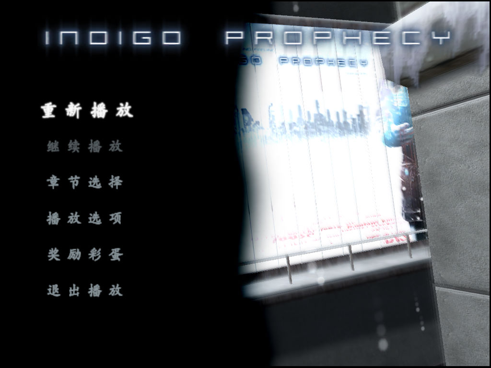
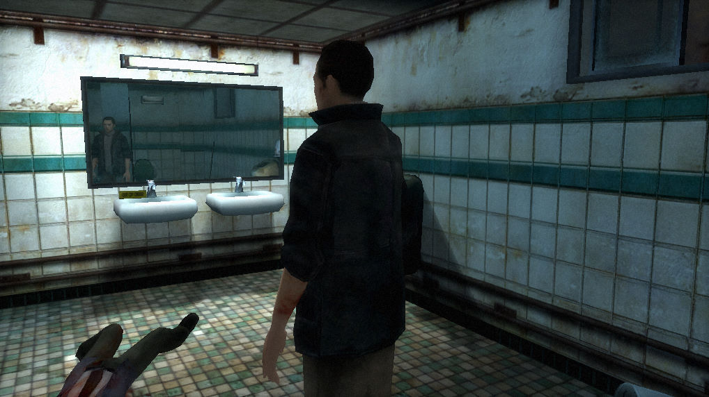

名稱：幻象殺手／全面失控／靛藍預言／華氏溫度計 (Indigo Prophecy／Fahrenheit，簡中／英文版) 簡介：Quantic Dream 2005年出品的互動式電影動作冒險遊戲，由Atari代理發行 [待補]。

保護：光碟SecuROM 7.11 備註：VirtualBox無法執行簡中漢化版，虛擬機請用VMware。 檔案：Patch 1.1.rar = 英文1.1更新檔 nocd10.rar = 英文1.0免光碟檔 nocd11.rar = 英文1.1免光碟檔 chs.rar = 簡中漢化檔（先更新至1.1版，需使用簡中系統，否則會亂碼）